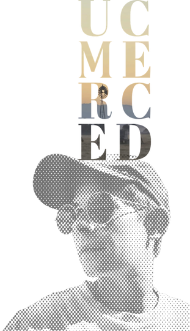
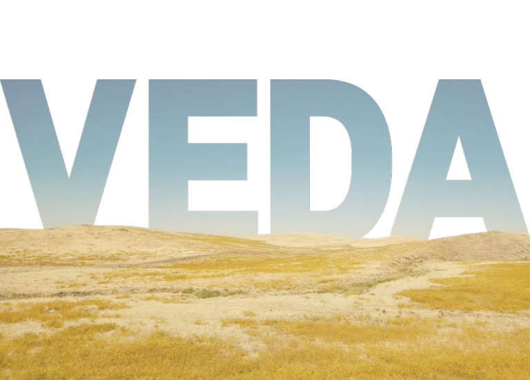

Cognitive and Information Science Ph.D. student asking: what happens when you open AI's black box and let it out into the world? Working from non-dual foundations of consciousness studies and the belief that intelligence is about the world and grown through being in it: I create virtual embodied dynamic associations by combining astrocyte analogues with dynamic associative networks.
The current AI paradigm's methods of functioning are so inefficient that continuously updating and coupling it to the world pollutes the planet and siphons water supplies from at-risk rural communities, something the Central Valley knows the implications of all too well. Additionally, such continuous updating overwrites what was previously learned, as its optimization methods lack an efficient way to structurally integrate new knowledge.
VEDA, Virtual Embodied Dynamic Associations, offer a principled alternative that avoids these limitations from the ground up. Many open questions remain, but the research direction is clear: with an eye on efficiency, take DANs as the neuron core and augment them with astrocyte analogues to gain a dynamical oscillating system that is able to learn continuously, growing new network topologies by interacting with the world it exists in. Patterns that are adaptive are kept and the rest pruned. And, with the addition of astrocyte analogues, gradients build up over time to reach a threshold triggering a sleep cycle where memories are consolidated. Here, abstraction extracts reuseable core patterns of the world.

This focus on efficiency and neuromorphic inspiration is driven by the realization that, if intelligence depends on our world, then a liveable world is primary. And, as a result, efficiency is mandatory.
We know of nothing more efficiently intelligent than our own brains. So they remain the gold standard of what AI must emulate. While our understanding of the brain is immense, we still have significant gaps in our knowledge. Virtual worlds offer a solution without the experimental limitations of human availability and imaging capabilities. We can look inside the mind of VEDA and see what connections were built when. We can replay the entire learning process to fully understand what shaped the topology that leads to emergent mind. This offers a new level of understanding that we cannot achieve through looking at already formed brains alone.
DANs, Dynamic Associative Networks, enact the embodied coupling between agent and world. Through this they are able to ground semantics in syntax, meaning in form, as they grow a network topology from patterns of coactivations between neurons, Hebb's Law. What is meaningful is what is useful for navigation of the world. And the world is reflected in the forms that grow, offering an intuitive argument for language as a compression of the world and why LLMs were capable of more than just language manipulation.
They are the core of VEDA.
Intellectual lineage:
Jeff Yoshimi | Ph.D. advisor
Christopher Kello | Ph.D. advisor
Tony Beavers | DAN creator, research mentor
Jonathan Shear | Lodestar
VCU B.A. Philosophy
CPH B.S. Computer Science
UCM Ph.D. student Cognitive & Info Science
© 2026 C.S. Rowe: all art in situ in Merced & Mariposa, California